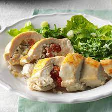
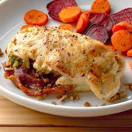

Pesto Rice-Stuffed Chicken


Juicy stuffed chicken is perfect for basil fans
- 3/4 cup uncooked instant rice
- 1/8 teaspoon salt
- 8 boneless skinless chicken breast halves (6 ounces each)
- 2 tablespoons canola oil, divided
- 1/2 cup chopped seeded tomato
- 1/4 cup prepared pesto
Procedure
- Preheat oven to 375°. Cook rice according to package directions.
- In a small bowl, combine tomato, pesto, salt and rice. Cut a pocket
horizontally in the thickest part of each chicken breast.
Fill each with 3 tablespoons rice mixture; secure with toothpicks.
- In a large skillet, heat 1 tablespoon oil over medium-high heat.
In batches, brown chicken breasts on each side, adding additional oil
as needed. Transfer to a greased 15x10x1-in. baking pan.
- Bake 18-22 minutes or until chicken is no longer pink. Discard toothpicks before serving.
Click To Return